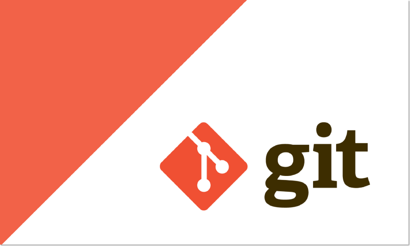
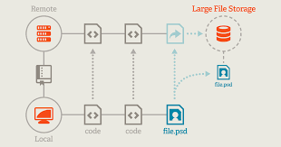
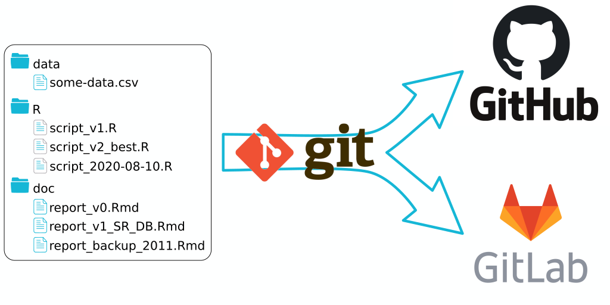

|  |  |  |
|---|
A Git egy nyílt forráskódú, elosztott verziókezelő szoftver, mely a sebességre helyezi a hangsúlyt. A fejlesztők a saját gépükön nem csak a repository-ban (tárolóban) lévő legfrissebb állapotát tárolják, hanem az egész repot. A verziókezelői tevékenységekvégrehajtása nagyon gyorsan történik, mely a Git erősségét is adja. A központi szerverrel történő hálózati kommunikáció helyett a lokális számítógépen hajtódnak végre a parancsok, így a fejlesztés offline megy végbe a workflow megváltoztatása nélkül. Mivel minden egyes fejlesztő lényegében teljes biztonsági másolattal rendelkezik az egész projektről, ezért a szerver meghibásodásának, a tároló megsérülésének vagy bármilyen bekövetkező adatvesztésnek a kockázata sokkal kisebb, mint a központosított rendszerek által támasztott pont-hozzáférés esetében. A Git repository minden egyes példánya –akár local, akár remote –rendelkezik a projekt teljes történetével, így egy teljes, elszigetelt fejlesztői környezetet biztosít minden fejlesztő számára, hogy szabadon kísérletezzenek új funkciók fejlesztésével mindaddig, amíg egy tiszta, publikálható verziót nem képesek előállítani.
- nyomon tudja követni, hogy mikor hogyan változott a könyvtárunk,
- vissza tudja állítani bármelyik korábbi (commit-olt) állapotát a könyvtárnak,
- szinkronizálni tud egy másik gépen levő hasonló könyvtárral, közben intelligensen átvezeti a változásokat, illetve jelez, ha nem megy neki.
A Gitnek megvan az a további előnye, hogy mindezt tudja titkosított csatornán (ssh-n keresztül) csinálni, ezt fogjuk mi használni ebben a leírásban.
A „git” nevet Linus Torvalds némi iróniával a brit angol szleng kellemetlen személyt jelentő szavából eredezteti. „Egy egoista szemétláda vagyok, és minden projektemet magam után nevezem el. Először volt a Linux és most a git.” Ez az önmarcangoló humor valójában csak fikció, hiszen Torvalds valójában külső nyomásra nevezte el a Linuxot maga után. A hivatalos Git wiki számos magyarázatot ad az elnevezésre, mint pl. „Global Information Tracker” (globális információkövető).
A Git hasonló egy hash-fához, azonban az egyes csomópontokon és leveleken hozzáadott adatokkal rendelkezik. A Git célja az adott projekt menedzselése, ill. az adatok változásának nyomon követése. Ezen információk adatstruktúrákban történő tárolását repository-nak, röviden repo-nak, avagy lokális adatbázisnaknevezik. A working directory,working copyvagy historyaz adott projektről,gyökérkönyvtáráról –amelyben a fájlok, forráskódok és mappák találhatóak –egy változatot, verziót, állapotot tartalma